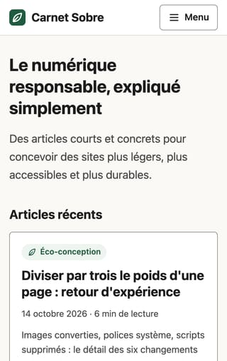

WebP, AVIF, SVG : quel format d'image choisir ?
Une photo de 240 Ko peut descendre sous les 120 Ko sans perte visible. Le bon format dépend de ce que montre l'image.
Sommaire de l'article
Pourquoi le format compte
Sur la plupart des sites, les images représentent plus de la moitié du poids d'une page. Choisir le bon format est donc le levier le plus simple pour accélérer l'affichage et réduire la quantité de données transférées, surtout sur un réseau mobile.
Photos et captures : WebP ou AVIF
Pour une photographie, les formats récents compressent bien mieux que le JPEG, à qualité perçue égale. Le WebP est lu par tous les navigateurs actuels ; l'AVIF va plus loin mais demande plus de calcul à l'encodage.
Une image décorative n'a pas besoin d'être une photo : un aplat de couleur ou un SVG de quelques octets suffit souvent.
Une capture d'écran suit la même règle. Celle ci-dessous est proposée en AVIF, en WebP et en JPEG de secours : le navigateur prend le premier format qu'il sait lire. Elle existe en deux tailles (écran standard et écran haute densité), ses dimensions sont déclarées pour que la page ne saute pas au chargement, et elle n'est téléchargée qu'à l'approche du défilement.

Illustrations : SVG
Logos, icônes et schémas sont des dessins faits de formes : le SVG les décrit en quelques lignes de texte, reste net à toutes les tailles et se compresse très bien côté serveur.
En résumé
- Photo ou capture : WebP par défaut, AVIF si l'outil de publication le permet, toujours avec ses dimensions et un chargement différé.
- Logo, icône, schéma : SVG.
- Image purement décorative : s'en passer, ou la remplacer par du CSS.